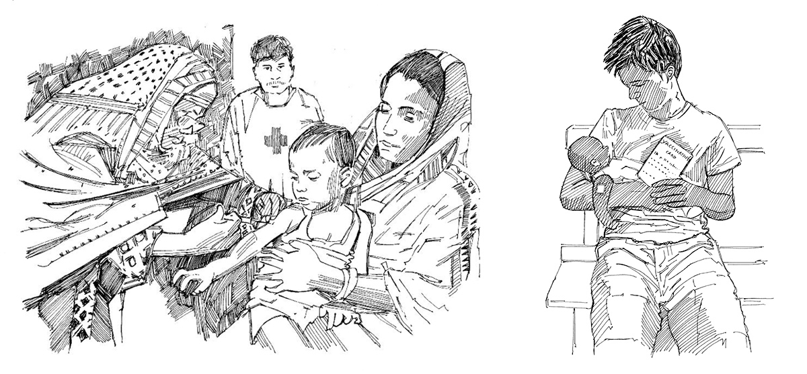

Diphtheria, tetanus, pertussis (whooping cough), polio, measles, rubella, mumps, chicken pox, meningitis, hepatitis B, yellow fever and tuberculosis are common but serious illnesses; they can kill or cripple children or adults for life.
Vaccines protect infants, children and adults from getting and spreading these diseases and from severe forms of them.
What you need to know
Vaccines against the above diseases are given to infants after birth and in the first year of life. Additional doses may be given later in accordance with national immunization schedules.
Vaccines protect infants and children from acquiring and spreading certain diseases and from severe forms of these diseases.
Every infant needs to be vaccinated against these diseases as part of the routine infant vaccination schedule. Speak with your local health authority about ages of vaccination and familiarize yourself with the national immunization schedule. The vaccination status of older children should be checked and, if they have not been vaccinated, they should be considered for vaccination.
The routine vaccination schedule may vary from country to country.
Key messages
A child who has not been vaccinated is more likely to die of diseases or to get a severe form of disease.
Vaccines are safe and efficient; every child should be vaccinated.
Vaccinations should sometimes be deferred for persons with a moderate or severe acute illness, but the infant, child or adult should be vaccinated as soon as the illness has improved.
Pregnant women need at least two tetanus vaccinations before giving birth.
Key actions
Find out from your health authorities what the specific vaccination schedule is in your area.
Find out when vaccinations are given in your area (at health facilities and outreach sessions).
Find out where to go to obtain vaccinations.
If mothers do not bring their children to the vaccination clinics, find out why.
Get to know all the families with babies under one year of age and visit them once a month.
Explain to pregnant women that they must visit the health worker for check-ups and should receive two doses of tetanus vaccine before their children are born.
If some members of the community are afraid of vaccinations, assist community workers to calm and remove their fears. Correct rumours and misinformation about vaccinations.

A child getting vaccinated. A vaccination card.
Community messages
See the following community messages to support routine vaccinations: